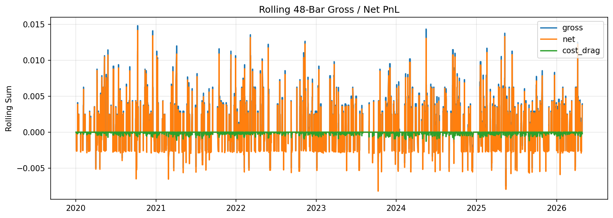
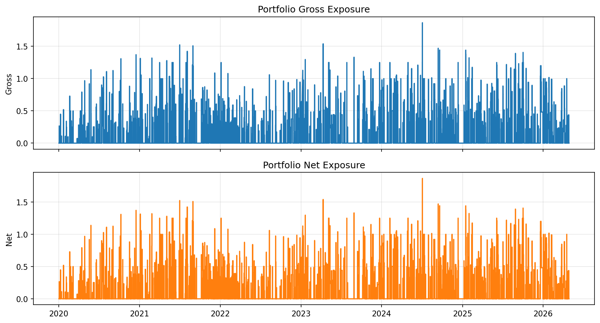

Back to projects
Quant Research / Systematic Trading
Systematic Trading Framework
Python | Multi-Asset | Backtesting | Risk
A reproducible, rules-based portfolio strategy that combines VWAP and EMA root-mean-square crossovers with trend-regime and PPO momentum filters across eleven markets.
Project Summary
From signal research to portfolio-level validation.
This experiment is a deterministic, rules-only strategy rather than a trained model. A long candidate requires an asset-specific VWAP RMS crossover above an EMA RMS, a bullish medium-versus-slow EMA regime, and positive PPO momentum. Entries are evaluated at the next bar open.
The portfolio-barrier engine applies asset-specific ATR profit and stop barriers, 0.25% risk per trade, a maximum of three concurrent positions, asset-group concentration limits, and explicit transaction costs and slippage. Results below are historical backtest results, not live trading performance.
XAUUSD
XAGUSD
SPX500
US100
GER40
US30
BRENT
ETHUSD
EURUSD
NIKKEI225
USOIL
Backtest Results
Net performance after modeled costs and slippage
The portfolio generated 786 completed trades over the evaluation window. Metrics use 30-minute annualization and include 1.5 bps transaction cost plus 1 bp slippage per unit of turnover.


Robustness
Cost, latency, gap, and walk-forward stress tests
The strategy remained profitable under doubled and tripled modeled costs, delayed entries, and a gap-penalty scenario. Seven annual walk-forward folds were positive; these checks reduce, but do not eliminate, selection and overfitting risk.
| Scenario | Cumulative return | Sharpe | Max drawdown |
|---|---|---|---|
| Base costs | 77.52% | 2.76 | −2.93% |
| 2× costs | 50.31% | 1.95 | −3.47% |
| 3× costs | 27.26% | 1.14 | −4.00% |
| 1-bar entry delay | 53.50% | 2.06 | −3.69% |
| 2-bar entry delay | 45.34% | 1.78 | −3.82% |
| Gap stress | 43.27% | 1.70 | −3.74% |
Portfolio Diagnostics
Costs, rolling P&L, and capital exposure
Modeled costs consumed 22.35% of gross P&L, so cost attribution is treated as a first-class diagnostic. Average gross exposure was 12.39%, with portfolio and asset-group constraints applied when signals overlapped.



Implementation
Research controls built into the workflow.
- Point-in-time timestamp normalization, duplicate handling, cached dataset snapshots, and persisted data/config hashes.
- Next-open entries with bar-level high/low barrier resolution and explicit tie-breaking for ambiguous intrabar exits.
- Asset-specific feature windows and ATR barriers, portfolio exposure constraints, group-level position caps, and an 8% kill switch.
- Strict deterministic execution with a fixed seed and single-threaded runtime for reproducible experiment artifacts.
- Automated cost, entry-delay, gap, walk-forward, exposure, turnover, and trade-level diagnostics generated with every run.
Repository
Project source and portfolio navigation
This page presents the latest selected research run from the broader framework. All figures are backtest artifacts and are not investment advice.